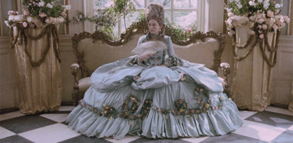
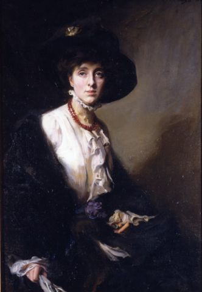
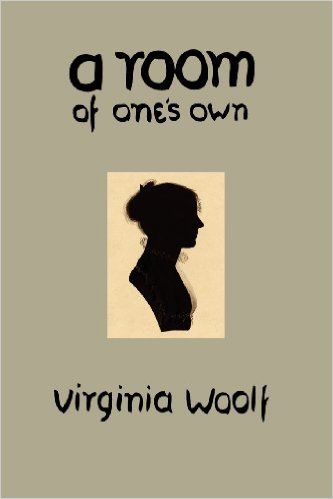
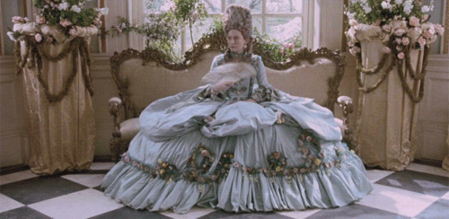
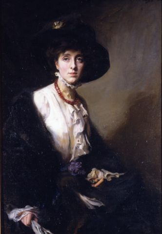
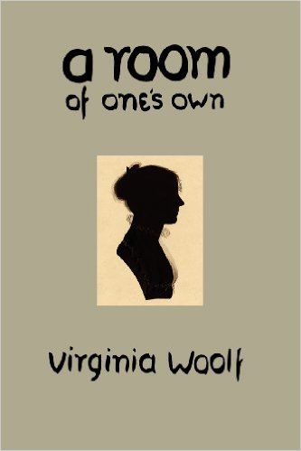

It’s hard to imagine for myself how ‘mainstream’ notions of gender-nonconformity have been around for at least a hundred years now and it’s still a concept to most people, not a natural phenomenon. Virginia Woolf first published her seminal novel Orlando: A Biography in 1928, which was based on the aristocratic life of her lover, Vita Sackville-West. The basic plot follows an Elizabethan poet who, upon becoming a personal page to the dying Queen Elizabeth herself, is granted by her property and fortune if he promises ‘to never fade’. The young man agrees he won’t and so becomes immortal—simple as that. Later on, as he is caught up in a coup as English Diplomat to Turkey, Orlando falls asleep for several days only to awaken as a woman. She goes on to live at least up until 1928 (in the same year that Orlando was published), when she publishes a poem centuries in the making, The Oak Tree, which documents her life as a transcender of the human sex and the gender roles attached to ‘both’.
The importance of this novel has been discussed extensively by scholars in literature, gender studies, and queer history, them predominantly appraising the novel for its treatment of gender-nonconformity as both auto-manifestation and conceptual drama. As a cinephile, my discourse on the matter will primarily focus on Sally Potter’s 1992 film Orlando starring Tilda Swinton since, in my opinion, it shortens the plot for cinematic brevity without losing the essence of Woolf’s message and exploration of form transcending function. Orlando provides a unique perspective on what’s it like to love, live, and create as both a man and a woman. Orlando’s sexual relationships are frivolous and short, as his immortality gets in the way of him sustaining any romantic relationships. Even when she marries the nonbinary Shelmerdine, it’s more to appease the Victorian societal demands of becoming someone’s wife.
Unfortunately, the film doesn’t extend upon Orlando’s androgyny later in the book as she dresses for both Lord and Madame, but regardless of which role she partakes in, she comes across contemporary poets and other cultural elites who all perpetuate misogyny in their conversations about their work. In one particular scene featuring several androgynous men during her first moments as Lady Orlando, she sits down with several poets who all begin spewing their beliefs of what a woman is. One states, ‘Woman has no desires, only affectations’ while another counters, ‘I consider woman to be a beautiful romantic animal who’—here I paraphrase—wants to be objectified with material wealth. Orlando laughs awkwardly and then begins fuming. One of the three then says, ‘The lady’s aflame, and silent—perfect.’ She refutes by calling out their misogynist rhetoric at which point she is told that intellect is a solitary business that can’t be done by women because women need a companion (read: father or husband) to guide them (Potter). They recognize Orlando, mind you, as the immortal woman-once-man she is, and yet they say such patronizing things. What frustration for an immortal who’s lived both lives! This and other instances Orlando must battle as she literally lives through the ages.
Virginia Woolf’s work in gender theory is extensive, particularly on the nature of nonconformity and androgyny (read her novel-length essay A Room of One’s Own). While her writings predate most 20th century scholars on the subject of queer theory, they echo the same strong sentiments: Gender can engender the sex, but it’s also independent of it, thus being able to go beyond it.
Potter, Sally. Orlando. Digital release. Directed by Sally Potter. New York: Sony Pictures Classics, 1993.
 




